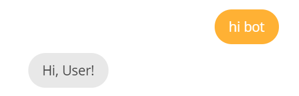

3. AIML基本标签¶
在这一小节中，我们会介绍四个AIML的基本标签，它们分别是<aiml>、<category>、<pattern>、<template>。
3.1. <aiml> 标签¶
<aiml> 标签位于AIML文档的开始和结束。它的属性包含版本和编码信息。作为强制性要求，<aiml> 标记必须至少包含一个 <category> 标记。我们可以创建多个AIML文件，其中每个AIML文件都包含一个 <aiml> 标签。
在Pandorabots里我们每次新建一个aiml文件，系统都会自动为我们生成 <aiml> 标签。
3.2. <category> 标签¶
<category>标签是我们创建的机器人的基本知识单元，里面包括用户的输入内容和bot的响应内容。标签内必须包含两个标签：<pattern>和<template>。
3.3. <pattern> 标签¶
<pattern> 表示用户的输入。它是<category>标记中的第一个标记。<pattern>标记可以包含通配符以匹配多个句子,即多种用户输入。
AIML不区分大小写。如果用户输入Hello Alice，hello alice，HELLO ALICE等，则所有输入均有效，为了使大小写的输入均能匹配到，我们一般会把 <pattern> 标签里的内容全部大写，如：<pattern>HELLO BOT</pattern>。
注意：<pattern>标签内不能出现标点符号。
3.4. <template> 标签¶
<template> 标签表示bot对用户的响应。它是
3.5. 示例¶
在我们刚才创建好的hello.aiml里加入如下代码：
点击界面右下角橘色背景按钮进行测试，输入hi bot ,得到bot的响应 Hi, User!

3.6. 小结¶
在这一节中，我们介绍了AIML语言中四个最基本的标签，并用这些标签搭建了一个聊天机器人中的“Hello World”。在后面的小节中，我们将会继续介绍AIML的标签，并用这些标签来实现更加复杂的聊天机器人。大家开始转战下一章吧！